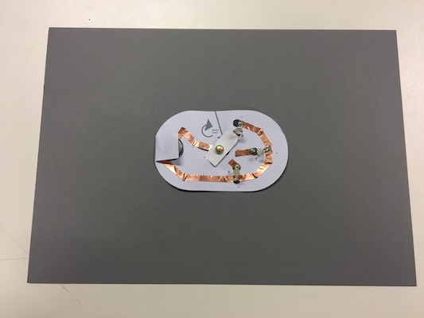

PAPER ELECTRONICS
19 October 2018
Description of the process:
- Get all the materials required: the shape of the circuit, some Coppertape, three LED lights and a battery.
- Cover the parts required with Coppertape to make the circuit.
- Twist the legs of the LED lights to make them flat and ready to sold in the circuit. It is important to be awared of which is the positive and the legative pole of the LED.
- Solder the LED lights to the Coppertape in the circuit, in order to make an optimal conection. Important to sold the positive and the negative pole as it is indicated in the circuit.
- Finally, put the plug in the circuit in the way that it is possible to move it and swiches on each LED ligh. Put the battery in its place, with the positive pole in the botton part and the negative on top. press it with the paper covered with Coppertape in order to make the conection necessary to work.

- Check that all the LED lights are working properly.
- Ejnoy it!.